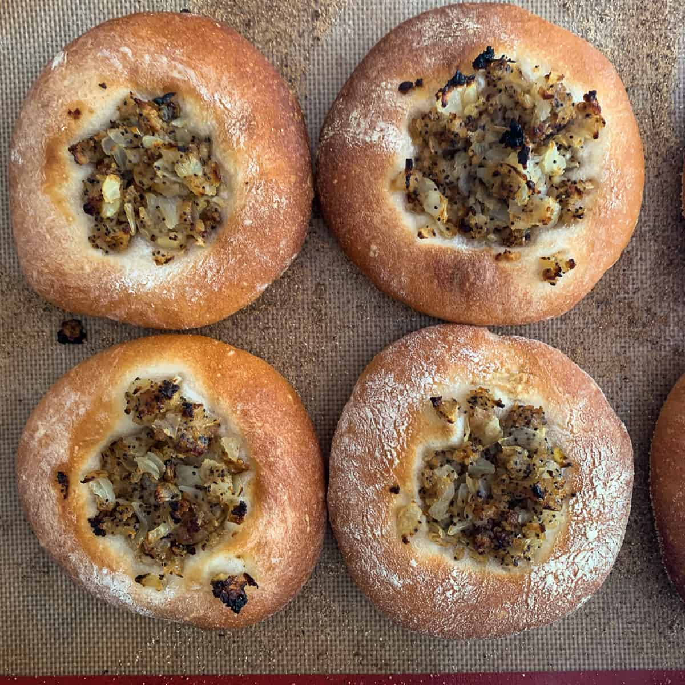

Bialy!

Bialy, A Bite Into Poland
Many make the mistake of calling a bialy.. a bagel. Bialy is its own food item. The bread of a bialy is baked while bagel bread is boiled, and unlike the bagel, bialy has a deppression
in the center of the bread as opposed to a hole. Bialy is most traditionally cooked with onions, which are placed into the depression prior to baking. Some may opt to include garlic,
poppy seeds, or bread crumbs.
Brief History of Bialy
From the 1800s to the first quarter of the 20th century, America experienced a steady influx of Jewish immigrants seeking refuge from a world that knew nothing but poverty, and war.
Immigrants brought over many delicious recipes to the United States, one being the bialy. By the 1920s, New Yorks population had increased to almost 5 million as opposed to its population
in 1880;80,000. Hundreds of Jewish, Italian, and Polish cuisine-inspired bakeries opened following this influx of immigrants, almost always including some variation of the bialy. Sadly,
only a handful of original bakeries are around, but bialy is considered a staple of their delicatessen.
Ingredients
-Dough
- 7 cups (840g) King Arthur Unbleached Bread Flour
- 2 3/4 teaspoons (17g) salt
- 1 1/4 teaspoons instant yeast
- 1/2 teaspoon onion powder
- 2 1/4 cups (510g) water
Filling
- 1 onion, peeled and quartered
- 1 teaspoon poppy seeds
- 1/8 teaspoon salt
- 3 to 4 grinds coarsely ground black pepper
- 1 tablespoon (14g) olive oil
- farina or yellow cornmeal, for pans
-Steps
- To make the dough: Weigh your flour; or measure it by gently spooning it into a cup, then sweeping off any excess. Combine the flour, salt, yeast, and onion powder in the bowl of a stand
mixer fitted with a beater attachment. Switch to a dough hook, add the water and mix until just combined, 1 or 2 minutes at low speed. Stop the mixer, cover the bowl, and let sit for 20 minutes.
- After this rest, uncover the bowl and continue kneading at medium speed for 8 minutes, or until the dough is smooth and elastic.
- Cover and refrigerate the dough (in an oiled bowl if desired) overnight for a slow, cool rise that will develop the dough's flavor.
- Next day, divide the dough into 12 pieces (they'll weigh just under 4 ounces each) and round each into a ball. Place on a lightly oiled baking sheet, cover with greased plastic, and let
rise at room temperature for 1 hour, or until puffy
- Preheat the oven to 475°F.
- To make the filling: Pulse the onion in a food processor until very finely chopped, but not liquid. Mix in the poppy seed, salt, and pepper. Heat the oil in a saucepan and cook the onion
mixture for a few minutes over medium-low heat until the liquid cooks off and the onion is very slightly caramelized. Remove from the heat and cool.
- To shape and bake: Lightly sprinkle 2 baking sheets with farina or cornmeal. Take each dough ball and stretch it into a bagel shape about 6" to 7" in diameter, without puncturing the center
and leaving a wide, flat indentation where the hole would be. Place a few inches apart on the prepared baking sheets, 6 per pan. Place a scant teaspoon of the onion filling in the indentation and
spread it out with your fingers. Don't overfill; a little goes a long way.
- Bake for 8 to 10 minutes, until light golden brown. Remove the bialys from the oven and serve warm; or cool on a rack and save for toasting later.
Sources: